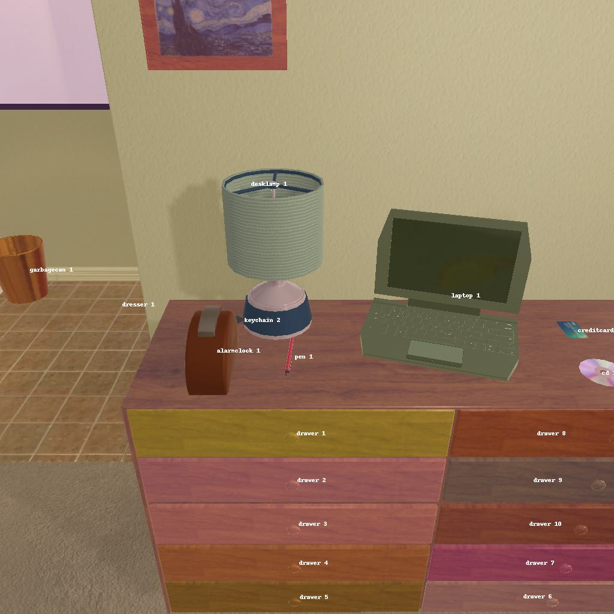

---------------------------------------------------------task: 1---------------------------------------------------------
--------------------------------------------------------------------------------------------------------------------------------------------------------------------
--------------------------------------------------------------------------------------------------------------------------------------------------------------------
Step:--------------------------------------------------------------------------3-------------------------------------------------------------------------------
----------------------------------------
VLM Prompt:
Image1:
Image2:
Image3:
**Instruction**
1. Analyze the provided image to identify all visible household objects, focusing on those relevant to the task description "examine the alarmclock with the desklamp."
2. Use the analysis of the image and the task hint "The agent must find an object of the desired type, locate and turn on a light source with the desired object in-hand." to answer the question: what is the most reasonable action in the choices for the task description "examine the alarmclock with the desklamp"?
4. Decide and write the answer using the template: The answer is: (i): , where i is the real number. If there is no desired object in the image, search every place based on **Initial Observation** to find the object. And if no one is exactly correct, choose a similar answer.
**Initial Observation**
You are in the middle of a room. Looking quickly around you, you can see bed (1), dresser (1), drawer (1-10), garbagecan (1), shelf (1-7)
**Answer Choices**
(1): go to bed 1
(2): go to drawer 2
(3): go to drawer 3
(4): go to drawer 4
(5): go to drawer 5
(6): go to garbagecan 1
(7): go to drawer 6
(8): go to drawer 7
(9): go to drawer 8
(10): go to drawer 9
(11): go to drawer 10
(12): go to shelf 1
(13): go to shelf 2
(14): go to shelf 3
(15): go to shelf 4
(16): go to shelf 5
(17): go to shelf 6
(18): go to shelf 7
(19): open drawer 1
(20): close drawer 1
(21): examine drawer 1
**Answer**
Let's think step by step by following the instructions.
----------------------------------------
----------------------------------------
Original Response:
The task description is "examine the alarmclock with the desklamp." From the initial observation, we know that we are in the middle of the room with various objects around us, including a dresser with drawers, a garbage can, and shelves.
Analyzing the images provided:
- Image 1 shows a laptop and a desklamp on a dresser, as well as a credit card, cd, and keychain on the dresser surface.
- Image 2 is identical to Image 1 and does not provide any additional information.
- Image 3 shows the same dresser from a different angle, revealing an alarm clock and a keychain, as well as the drawers labeled drawer 1 to drawer 10.
From the task hint, we need to find the alarm clock and examine it with the desklamp. Since we can see the alarm clock (alarmclock 1) in Image 3, we know its location. The desklamp (desklamp 1) is also visible and is on the same dresser as the alarm clock.
The most reasonable action to accomplish the task would be to go to the desklamp and turn it on to examine the alarm clock. However, this exact action is not listed in the answer choices. The closest action that would allow us to proceed with the task is to go to the dresser where both the alarm clock and the desklamp are located. Since the drawers are part of the dresser, the closest action would be to interact with drawer 1, which is part of the dresser where the alarm clock and desklamp are placed.
The answer is: (19): open drawer 1.
----------------------------------------
----------------------------------------
>>> Refine Original VLM Response and Get Pure Action: open drawer 1
----------------------------------------
-----------------------------------------------------------------
Running time: 13.31245756149292 seconds
Total Money: 0.62607
-----------------------------------------------------------------
-----------------------------------------------------------------
Text Observation:You open the drawer 1. The drawer 1 is open. In it, you see a laptop 1, a desklamp 1, a alarmclock 1, a cd 1, a creditcard 1, a pen 1, and a keychain 2.
-----------------------------------------------------------------
UNSUCCEED